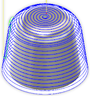

Désactivé
Coupes concentriques
Activé
Coupes continues
Remplace les contours des trajectoires d'outil consécutives et fermées par une trajectoire d'outil continue. Cela entraîne une trajectoire d'outil de type spirale.
Permet de réduire le nombre de levages de l'outil et, de ce fait, d'obtenir des passes de découpe sans pas entre chacune d'elles, pour une meilleure finition de surface.
|
 |
Désactivé |
Activé |